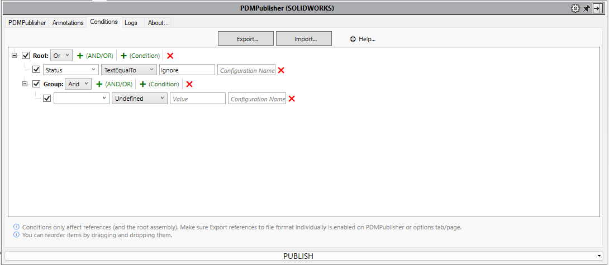

Conditions Tab

Conditions can be added to the add-in to include or exclude files from being processed.
The add-in will only process files that evaluate any of the set conditions as true.
Nested Groups Support (AND/OR)
PDMPublisher now supports nested condition groups, allowing you to create more advanced logical filters using AND/OR trees.
Tip
You can add a new group by clicking the + (AND/OR) button next to any condition group.
Condition Options
| Option | Description |
|---|---|
| Variable | Variable name to run the condition on. |
| Condition Type | Type of comparison or rule to apply. |
| Value | Value to compare against. |
| Configuration | Configuration to read the variable from (use @ for general use). |
Special Variables
These built-in entries appear at the top of the variable list:
- FileName: File name (e.g.
123456.SLDDRW) - Revision: Current revision cached
- Version: Current version cached
- Workflow: Workflow name of the file
- State: Current state name of the file
Operation Types
| Operation | Description |
|---|---|
| TextEqualTo | Checks if the text is exactly equal to the value. Supports * wildcard. |
| TextNotEqualTo | Checks if the text is not equal to the value. |
| TextLengthLessThan | True if text length is less than the value. |
| TextLengthBiggerThan | True if text length is greater than the value. |
| TextContains | True if the text contains the value. |
| TextDoesNotContain | True if the text does not contain the value. |
| NumberEqualTo | True if number equals the value. |
| NumberNotEqualTo | True if number is not equal to the value. |
| NumberLessThan | True if number is less than the value. |
| NumberBiggerThan | True if number is greater than the value. |
| DateEqualTo | True if date equals the value. |
| DateNotEqualTo | True if date is not equal to the value. |
| DateLessThan | True if date is earlier than the value. |
| DateBiggerThan | True if date is later than the value. |
| YesOrNoEqualTo | True if value equals Yes or No. |
Order of Evaluation
PDMPublisher for SOLIDWORKS follows a specific order when evaluating variables and configurations:
Configuration-Specific Property Lookup
When evaluating a variable, PDMPublisher for SOLIDWORKS first tries to retrieve its value from the referenced configuration of the file.Fallback to Custom Tab
If the property is not found in the referenced configuration, PDMPublisher for SOLIDWORKS will fallback to theCustomtab to retrieve the value.Assembly References with Empty Configuration Field
When processing an assembly, if a condition has an empty configuration field, PDMPublisher for SOLIDWORKS will evaluate the condition against the referenced configuration(s) of the document (e.g. parts or subassemblies).
Note: This behavior ensures maximum compatibility with different file property setups, especially in multi-configuration parts and complex assemblies.